The Brief
Profiles & Personas paired students by MBTI opposites and asked each to learn — then visually portray — their partner. Paired with Stella Zheng, I built her profile from conversations, a Proust Questionnaire, and time spent exploring New York.
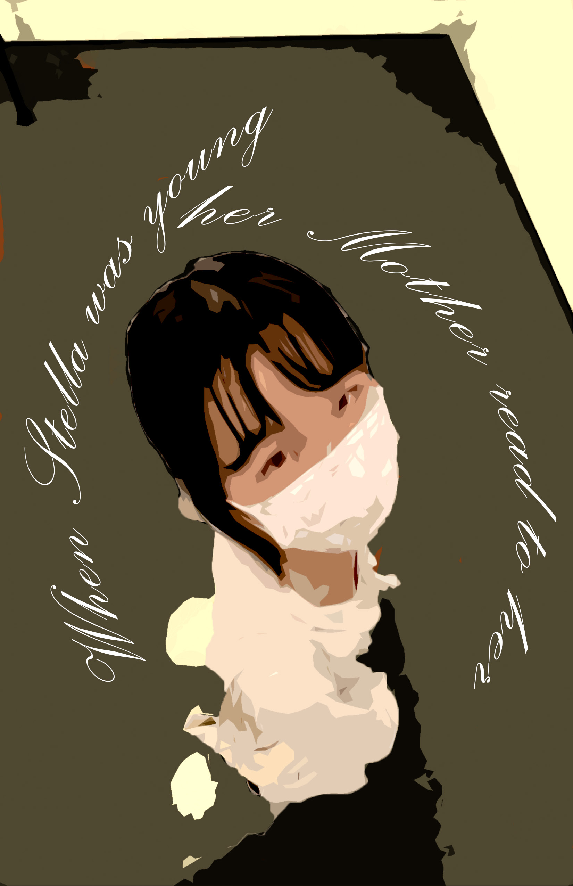
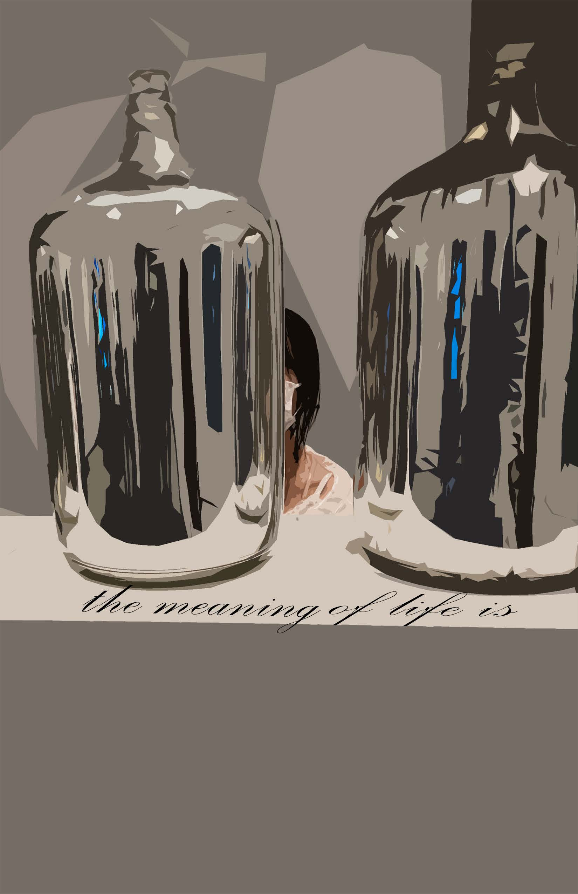
The Story
When Stella was young, her mother read to her: the meaning of life is to live life with meaning. But as she grew older, she found that sometimes you don’t need a purpose — sometimes you just want to be alive.
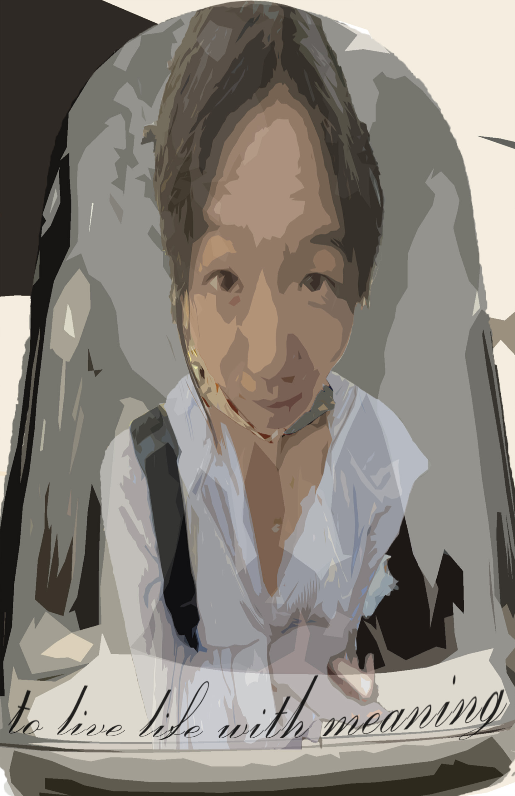
Concept
The portrait took the form of a children’s picture book — Stella’s quiet philosophy carried in posterized illustration and hand-lettered script, drawn from her love of the format.
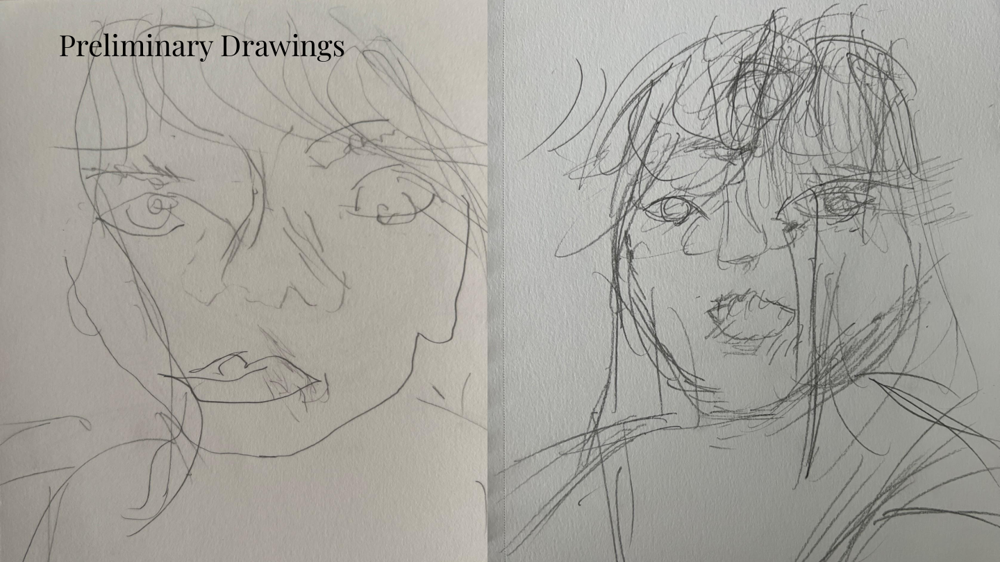
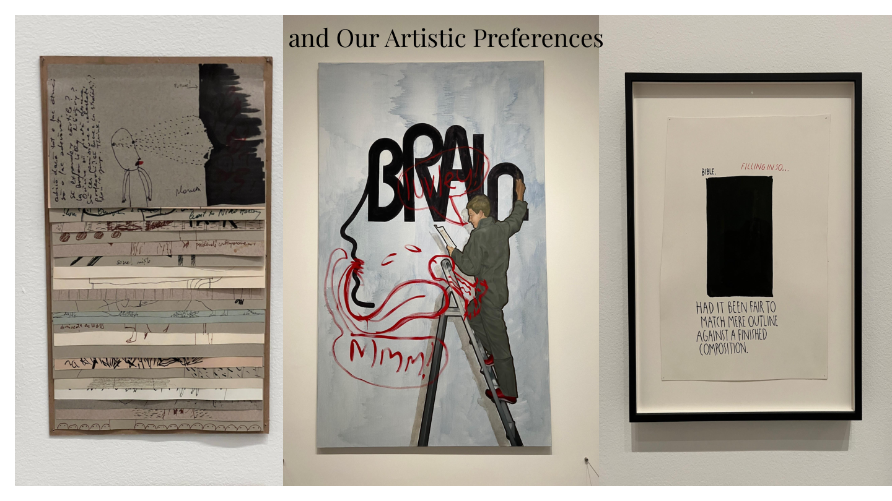
Process · 01
Started with the portrait
Preliminary drawings and gallery visits mapped Stella’s personality and artistic taste — documenting her reactions to find the right register for her profile.
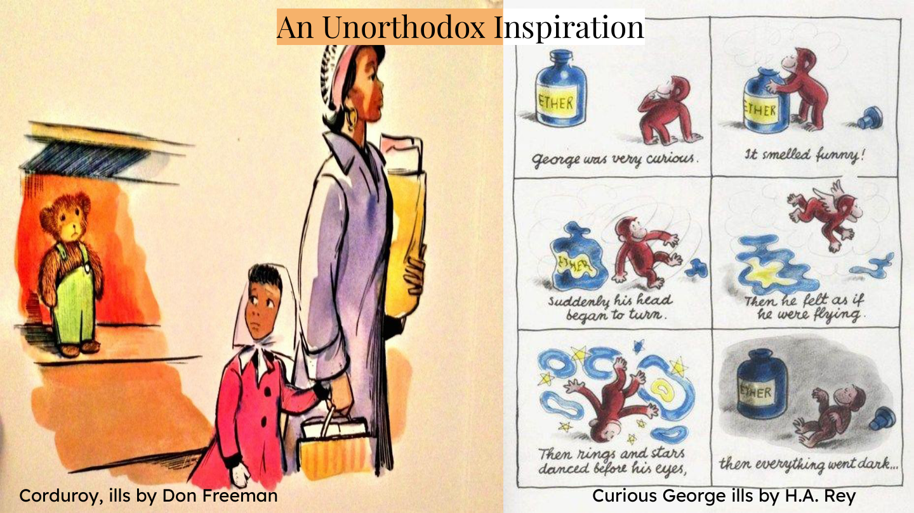
Process · 02
An unorthodox inspiration
The visual language came from children’s illustration — Don Freeman’s Corduroy and H.A. Rey’s Curious George — matching Stella’s gentle, storybook sensibility.
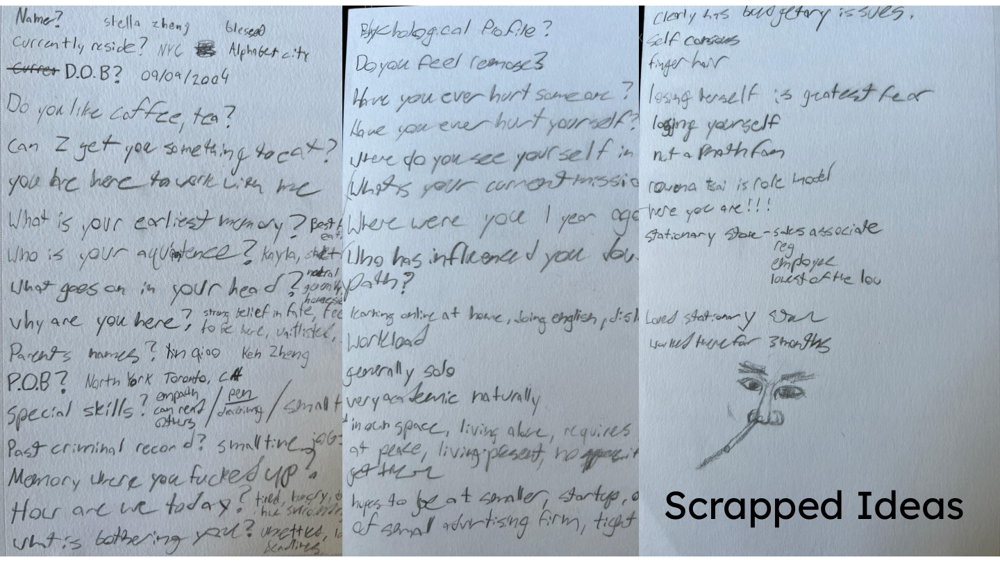
Process · 03
Hidden gold in the notes
The narrative was shaped through scrapped ideas, handwritten notes, and lines found in conversation — sifting the raw material for the story worth telling.
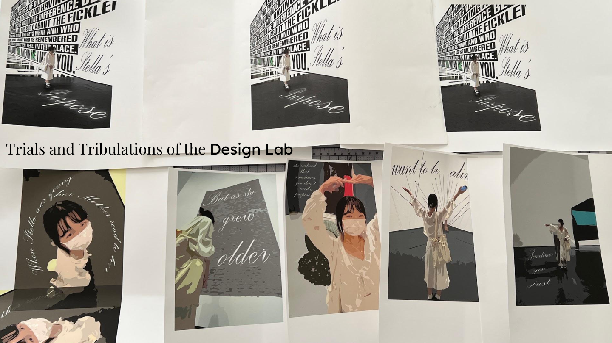
Process · 04
Refined in the design lab
Trials in the lab iterated on posterized imagery and script typography until the book read as a single, coherent voice.
Select Spreads
Turning the pages — the story opening, deepening, and settling into its quiet close.
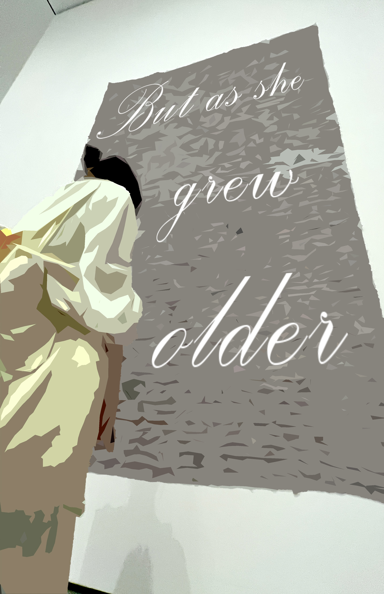
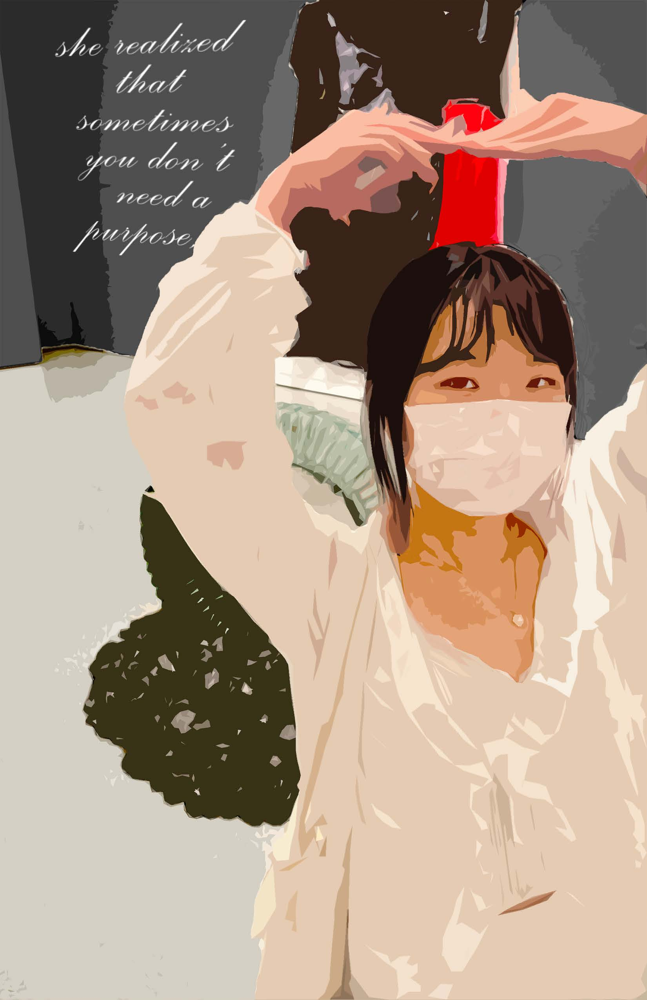
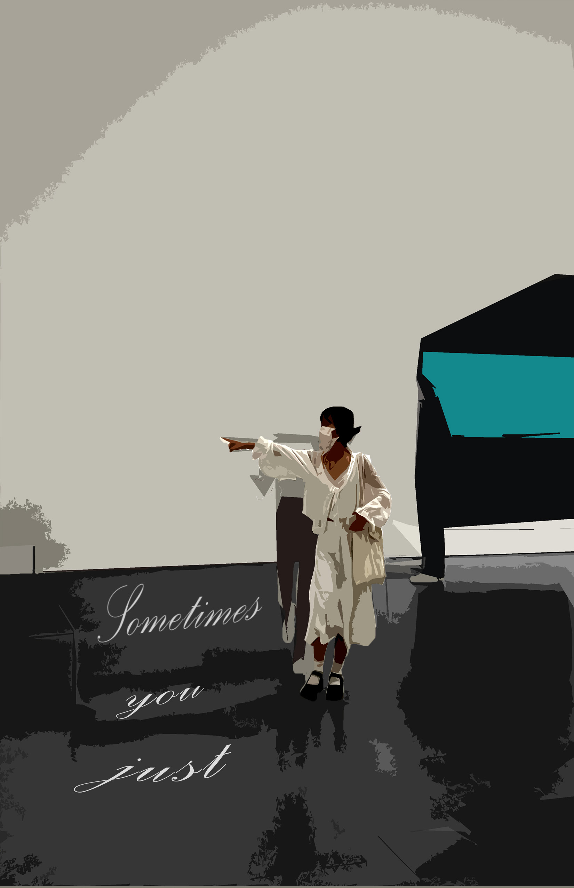
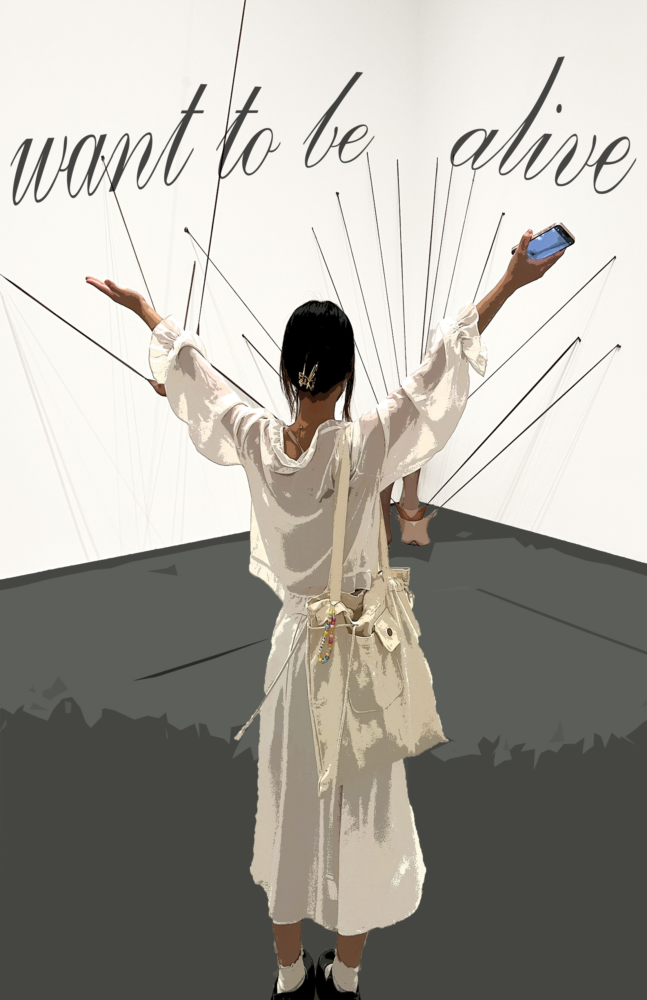
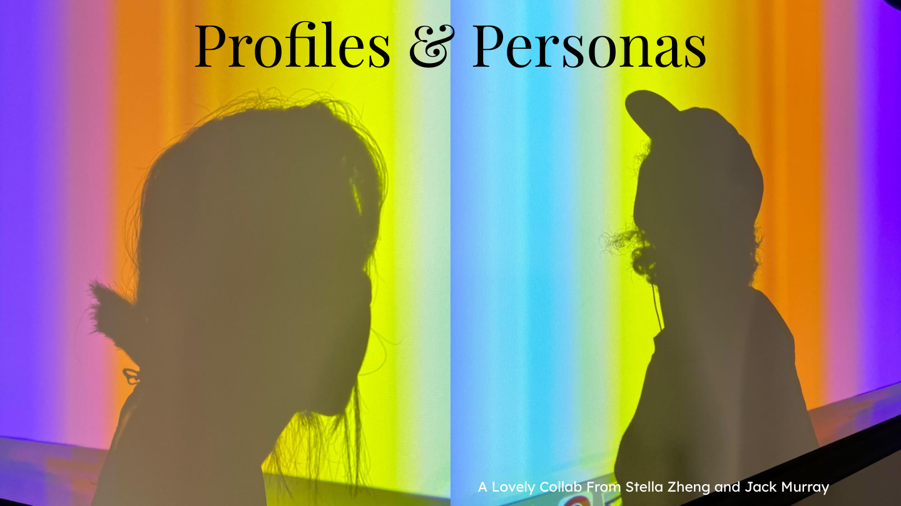